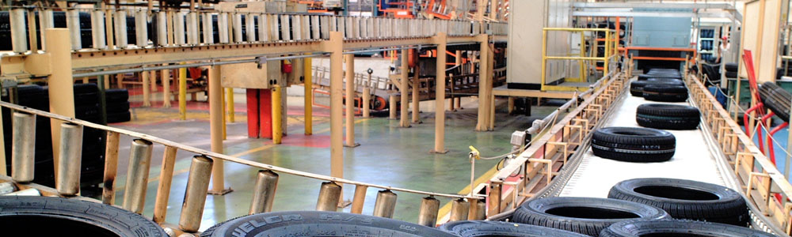
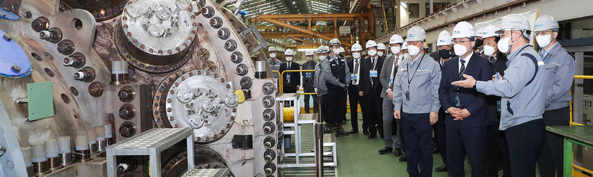
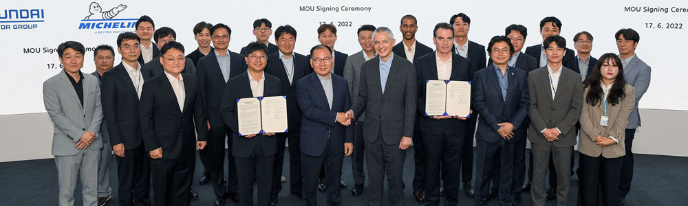
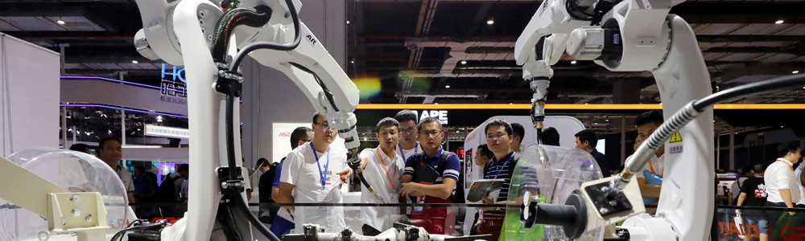

HOME >
효성그룹 >
연혁
연혁
끊임없는 도전과 성취의 역사
HYOSUNG HISTORY
- 1966
- · 동양나이론 설립
- 1967
- · 울산 타이어코드 공장 완공
- 1968
- · 울산공장 준공
- 1973
- · (주)토프론 설립
- · 동양폴리에스터(주) 설립
- · 동양염공(주) 설립
- 
- 1977
- · 창원 중공업 공장 준공
- 1978
- · 중공업 기술연구소 설립
- · 최고품질관리시스템상 수여
- · 카페트용 BCF사 개발
- 1980
- · 효성BASF(주) 설립
- · 구미컴퓨터 공장 준공
- 1983
- · 전자연구소 설립
- · 전동기 미국 수출 개시
- 1985
- · 효성NAS(주) (現 효성인포메이션시스템㈜) 설립
- · 안양종합연구동 완공
- 1987
- · 한국엔지니어링플라스틱(주) 설립
- · 원미섬유공업(주) 흡수 합병
- · 창원 제3공장 (회전기공장) 준공
- 
- 1989
- · PP 및 프로필렌 사업 진출
- · 효성EBARA 설립
- · TOPLON 상표 해외 출원(40개국)
- · 창원 제4공장 (전장공장) 준공
- 1992
- · 스리랑카 CFC 나이론공장 인수
- · 안양공장 스판덱스 생산 시작
- · 구미1공장 완공
- · 창원 제5공장 (감속기공장) 준공
- 1994
- · 동양나이론, 효성T&C로 사명변경
- · 동양폴리에스터, 효성생활산업으로 사명 변경
- · 베트남에 효성VINA(주) 설립
- · PP 배가증설(10만톤 → 20만톤)
- 1998
- · 효성T&C, 효성물산, 효성생활산업, 효성중공업이 (주)효성으로 합병
- · 5개 PG와 31개 PU로 조직 개편
- 2000
- · 폴리에스터 타이어코드 공장 증설
- · 브릿지솔루션그룹, 홍진데이타시스템, 이지스벤처그룹 인수
- · 효성가흥안륜유한공사 설립
- 2002
- · 효성컴퓨터PU와 효성데이타시스템(주)가 노틸러스효성(주)으로 합병
- · 미국 미쉐린 스코츠빌 타이어코드 공장 인수
- · 타이어코드 부문 미쉐린과 장기공급계약 체결
- 
- 2004
- · 중국 보정 배전변압기 공장 준공
- · 나이론66 의류용 원사 '제니오' 출시
- · 구미 스판덱스공장 증설
- · 중국 서북전망공사와 750kV급 초고압 차단기 공급계약 체결
- · 중국 가흥 타이어코드공장 준공
- 2006
- · 3년 연속 '가장 존경받는 기업'으로 선정
- · 만우 조홍제 회장 동상 제막식 거행(동양학원)
- · 중국 난징 스틸코드 공장 건립
- 2008
- · 진흥기업(주) 인수
- · 중공업 초고압 설비 증설
- · 베트남 타이어코드 공장 준공
- · 중국 남통 효성 변압기 유한공사 공장 준공
- 2010
- · 40억불 수출의 탑 수상(제47회 무역의 날)
- · 베트남 스틸코드공장 준공
- · 브라질 스판덱스 공장설립 MOU 체결
- · 카타르 전력망 사업 계약 체결
- · 알제리 변전소 건립 프로젝트 진출
- 2011
- · 광혜원공장, PS Call을 통한 품질 관리 시스템 도입
- · 중공업PG, 서안교통대학 전기절연연구소와 공동연구 및 개발MOU 체결
- · 타이어보강재PU, 미쉐린과 5년 후 장기공급재계약 양해각서체결
- · 브라질 스판덱스 공장 준공
- · 국내 최초 중성능 탄소섬유 개발
- 2012
- · 한국전력공사 주관 전기차 공동이용(EV Sharing) 시범사업의 '충전시스템 사업자'로 선정
- · 네오켐PU 독일 LINDE社로부터 '2011 Global Most Improved Supplier' 상 수상
- · 패키징PU, 서울우유 도토루 신제품 생산
- · 노틸러스효성, '2012 레드닷 디자인 어워드' 수상
- 2013
- · 탄소섬유 브랜드 TANSOME 론칭
- · 기전PU, IECEx Service FAcility 인증 취득
- · 타이어보강재PU 국제통용 탄소라벨링 인증서 획득
- · 용연공장, 프로필렌 공장증설 기공식 실시
- 2014
- · 전력PU, 신성남변전소에 100Mvar 스태콤(정지형 무효전력 보상장치) 공급
- · 스판덱스PU 국내 최초 ISO/TS 29001 인증서 획득
- · 효성 굿스프링스, 세계최대규모 '펌프시험센터' 준공
- · 기전PU, 국내 첫 택시용 CNG 충전소 공급
- · 전력PU, 알제리 전력청으로부터 1억불 규모 변전소 수주
- · 전력PU, 모잠비크 태양광발전소 준공 및 전력 공급
- 2015
- · 창원공장, 마포본사, 직장 어린이집 개원
- · 문화체육관광부 '문화예술후원우수기관'에 선정
- · 전주 탄소특화창업보육센터
- · 2015 가족친화 우수기업 인증 획득
- 2016
- · 기전PU, 국내 최초 15MW급 수차발전기 개발 성공
- · 인테리어PU 중국 청도공장 완공
- · 2016 나눔국민대상 국무총리표창 수상
- · 2016 영업이익 1조 돌파 및 ‘1조클럽’ 가입
- 2017
- · 프로판가스 탈수소 촉매 공정 기술, 2017 산업기술성과 14선에 선정
- · 전력PU, 핵융합 연구 공헌 장관표창 수상
- · 효성캐피탈 창립 20주년
- · 창원공장 안전보건공단 '공생협력프로그램' 최우수등급획득
- · 공덕역 효성해링턴스퀘어 준공
- 
- 2018
- · 효성첨단소재, 베트남에 신규 타이어코드 생산 법인 설립
- · 효성티앤에스, 강남구 자원봉사 구청장 표창 수상
- · 효성중공업, 대한민국 그린카 어워드 그린에너지상 수상
- · 효성인포메이션시스템, 데이터 센터 솔루션 시연 DX센터 개소
- 2020
- · 효성캐피탈 매각
- · 효성첨단소재, 글로벌 기후변화대응 최고 등급 선정
- · 효성ITX, SAP와 차세대 스마트팩토리 솔루션 구축
- · 효성첨단소재-울산시 ‘아라미드 생산공장’증설 투자 양해각서 체결
- · 린데그룹과 액화수소 사업 추진 MOU 체결
- 2021
- · ESG 경영위원회 출범
- · (주)효성, 효성트랜스월드 흡수합병